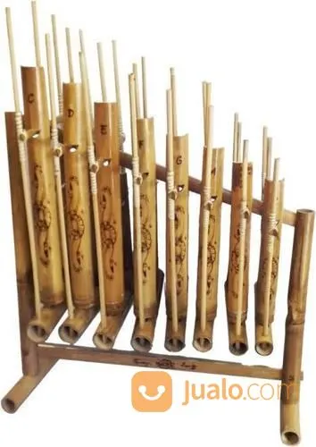
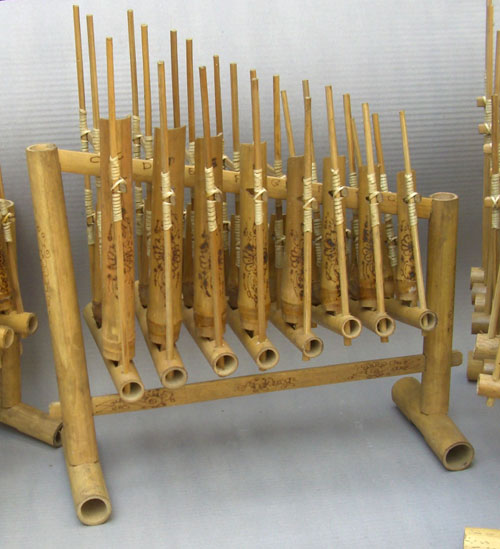
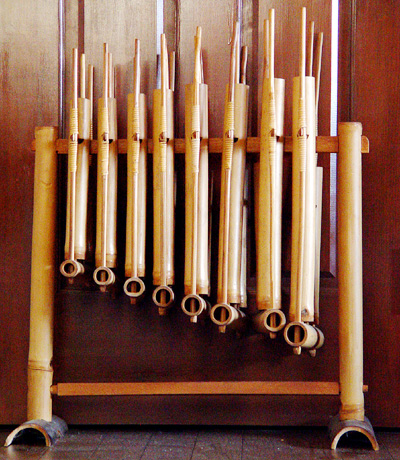

Premium Angklung
A Bamboo made instrument
FROM SUNDA
Angklung is a bamboo musical instrument native to Sundanese people of West Java. It is made out of bamboo tubes attached to a bamboo frame. The tubes are carved so that they have a distinctive resonant pitch when being vibrated. Each angklung only plays one note.

High Durability
Our Angklung made from hi-grade bamboo that stronger than common bamboo

Pure Sound
The Sound that deeply pure with great tone

Fast International Shipping
We guarantee our product to arrive as soon as expedition can
Angklung Gubrag
$200
-

- Originally from West Java and developed in Cipining Village. Usually this angklung is made of Nigra bamboo which is very broth and sturdy
Angklung Kanekes
$300
-

- Angklung Kanekes it's from the region of Baduy, Kanekes. The use of the angklung is related to the rice rite, which is sounded when they plant rice in the fields
Angklung Reyog
$350
-

- Angklung Reyog is a musical art genre known because it is used to accompany the Reog Ponorogo dance art (Reog Ponorogo dance originates from East Java)